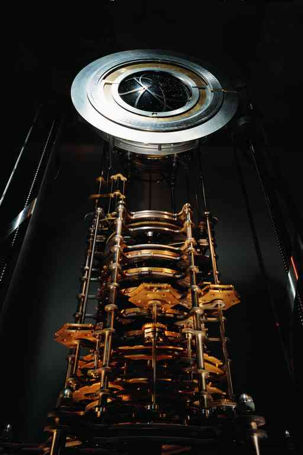

Meanwhile, She Dreams (Part 1)
by
Brett Davidson
To Meanwhile, She Dreams (Part 2)
Meanwhile, she dreams. She dreams of ochre and gold tiles, diamonds and darts, that rustle in her eyes like autumn leaves and are autumn leaves caught in an eddy of winds, like.. she has never seen such a thing — but she remembers. There is a flash, so bright, of something blue, and then she wakes. Fragments of the dream that is itself a fragment linger. Blue, gold, the wind against the bare skin of her face and something bright. There is something so very bright that it sears, a light that looks like, is like, liquid metal, droplets falling into her eyes, burning holes in her retina and leaving scars of colour that chase themselves across her vision.
She cries in pain and terror and her mother hears her and comes into the room and comforts her, and with gentle hands brushes away all trace of that terrible dream.
This is when she is a child. Too often, to her mother's horror, the dreams are of a longing to be Outside.
There are patterned tiles in her thoughts as she awakes on this day. It is years later and she is a novice Scholar and she does not speak of her dreams.
Her mother married a hero and now she is a widow, thankful that she has successfully guided her daughter into scholarship and that she will never repeat her mistake. While Scholarship it is not a lucrative vocation, it begets and requires an aura of stability and propriety, and she must not speak of her inner life and the unarticulated hopes that it engenders.
Leaving her domus for the gate court of her clan complex this morning, she pauses for a moment at the vine wreathing the portals. She and her girlfriends had raised this vine, this darling-vine, tending it from a mere cutting from the Underground Country until it grew to wreath the doors and columns and became the Fey-tree of their cohort. As is her right, she plucks one grape, and its flavour is an explosion of sweetness in her mouth. It tastes of her childhood and the childhoods of all her friends now grown. Perhaps it tastes like liquid sunlight, she thinks and leaves the compound. Perhaps it is a parting kiss from home.
She wears a veil in the passages of the city. Where there is no distance to provide space and privacy and she can never quite shut out the static of the minds around her, concealment and disinterest are the minimum of good civic manners, and no one ever admits to penetrating a disguise.
"Ilde, ex Timarchos," she says to the guardian at the Initiates' Portal of the city library, giving her name and clan affiliation as she always does. She proceeds through the maze of crazy-tiled passages to the office of the Magister of Assignments. There she is given the access codes for the reports compiled by the Monstruwacans that she has been told that she must read and catalogue this week. As she continues deeper into the inner windings and convolutions of the library, she sneaks a look at the titles, and whistles quietly when she discovers that one refers to events outside in the Night Land.
Despite the eternal tension of the siege and the occasional furious moments of battle, life in the Land is slow and any happening is rare and extraordinary. It is however a rule that, over the plains of time, even the most improbable thing becomes a virtual certainty. Seen from the height of the Tower and from the inner coils of the libraries, the hills flow like wax and even the Watchers creep. The marvels of centuries swirl and accumulate in great drifts of information and then become an unstoppable torrent.
Inside, safe and quiet, deep within miles of concentric shells of metal and seeing only books and patterns about her, she feels a brief sense of vertigo as the aeons spin around her head. If asked, she would admit to being thrilled.
She finds her favourite view table and calls up the reports. She disposes of the routine ones first in a remarkable display of restraint, but savours the thrill of anticipation as their dull statistics flicker under her fingertips. Finally she comes to the crucial, solitary, one and allows herself to think rather than react.
It is indeed no pedestrian description of a patrol along the inner perimeter of the Air Clog, but of a strange and terrible sighting in the Land of a peculiar beast. She almost licks her lips.
The narrative has a broken, breathless style as if the man who has given his testimony was delivering it with his heart still pounding hard against his ribs, his breath coming in brief and rapid pants, making his words mere gasps. Maybe that was the case. She reads hungrily.
The cadet and his company were on one of the rare patrols of the external perimeter of the Air Clog and they came across a new growth just by the path from the Great Gate. This thing, she reads, was like a bush, apparently. A fractal perhaps, probably. Branches branching, making an ambulatory thicket. It appeared first as a shadow against the ground, then rose up and spread its horns, fronds, dendrites. They at first assumed by its structure that it was a pneumavore, but it seemed to be made of recognisably solid matter: black glass perhaps, or maybe its surface was wet. In either case, it was dark and it gleamed. Reflections ran over it as it moved, or that could have been the effect of corpuscles of phosphorescence moving under a transparent skin.
There seemed to be no centre to it; rather there were many thicker trunks that connected only to each other instead of a recognisable torso or body. Each limb divided and divided again from masses as thick as the body of a man to the finest of filaments, finer and softer than the antennae of moths. They rippled as if in a breeze, but the air was still.
Ilde shakes her head. If only there had been another survivor, she thinks. Then the tale might have some more coherence in the cross-reference of testimony. Or perhaps not.
Her criticisms are unkind, she knows. It is almost incredible that there was even one survivor, and an inexperienced cadet at that. He straggled behind the others a little. It was his slowness that saved him and he is very grateful for his life. She should be grateful too.
She reads on.
One filament touched the cheek of a Watchman and he screamed and froze. His nearest companion tried to brush it away with his hand. It was a foolish gesture: seeing that the dendrite caused pain at least, the man should have swung his diskos and severed it instantly without touching it even through his gauntlet. Instead, he too was caught.
Things happened quickly from this point. The thing had apparently tasted them and liked their flavour because it flung out stouter whips, ensnaring more men before they could react. The threads spread over their armour, weaving amongst their plates, and through their flesh as well, no doubt. They were soon entirely bound up in the fabric of the thing and drawn within. The plates of their armour came apart, were conveyed towards the edges of the thing and fell with ringing tones upon the earth.
Within, the witness said still more haltingly, the skins on the men were peeling too, and underneath their skins, amongst the fibres of the muscles and veins and in the pooling blood, the black threads were spreading and seemed to be turning red themselves as if they were becoming like veins and muscles. This thing was a spider's web that was the spider itself, or vice versa, he said. Perhaps the Watchmen were not merely being torn apart, they were being eaten, and perhaps instead of being eaten, they were somehow being incorporated into the body of the creature.
Do not interpret, the interrogating Monstruwacan had said. Only describe.
Very well, the cadet had said. There was one last thing before he broke the spell of his terror and was finally able to bolt.
And what was that?
Around one branch and its divisions, he said, he saw rings and a bracelet. They were carried as if they had been worn on a wrist and fingers, as if the branches had once been a wrist and fingers and were now transformed.
Do not interpret, the interrogator repeated. The cadet is dismissed and the report concluded. The Monstruwacan's own interpretations follow, expanding on the cadet's testimony.
As she reads this report now she despairs a little, wishing that she had seen this thing with her own eyes, even if only from a balcony high above, through a telescope. The man of the Watch who saw this thing was still half mad with fear and he frequently contradicted himself within the space of a sentence.
She wishes, if she had not observed from above, that she could at least have spoken to him herself, to tease some sense of the real facts from him, but it is not permitted. Stories themselves evolve in the telling. They are collaborations between teller and listener, and, as she thinks she would tease the story out of him, so she would — she would spin her own tale in listening. He would watch her eyes, losing himself in them, seeking to synchronise his thoughts with hers even as he was sure that he was imparting some objective truth and so they would confabulate.
The Land is so alien that everyone who returns is desperate to heal the breach between their own experience and the ground of their essential humanity in the home realm. The Scholastic archivists are charged to collect and sort and store their reports, but they are forbidden to hope that they could understand for themselves or corrupt the witnesses' tales with reflections of their own imagination. Tentative interpretation is left to the Monstruwacans as their privilege, though they call it a curse, and very likely it is a curse. Together with the Scholars, in smooth concert, they assimilate the events of the Land, as that monster had apparently assimilated the Watchmen.
Around her, Ilde feels the thoughts of her colleagues, observations and impressions spilling out of their minds in a faint, incoherent static of fragmentary and overlapping qualia. "Monster", she says, the word slipping unintended from her own lips. She is an untidy eater of books, always spilling fragments of ideas as she feeds on them. This word in particular is a fossil. It has survived almost as long as there have been words and it means omen. The Land is a place of monsters. "Monster, Monstruwacan," she says. Indeed, she thinks. The guild that watches is the one that reads omens. Therefore they are the Monstruwacans, who watch and eat omens.
She sighs, obliquely and ironically reconciled to her task's necessity, if not its significance. Disappointment corrodes her sense of wonder. Even if this witness had seen clearly and spoken clearly to his captain and the Monstruwacan interrogator, to classify this thing would be pointless.
It was a unique wonder, and it existed in a world of myriads of solitary and wondrous and ever-changing things that altered by their own impulse or were changed from without. What appeared to be the case with this beast is known to have happened in the past to other adventurers. They had been recognised only by the fragments of armour that they still wore, those pieces themselves corroded with strange patinas and softened like wax.
Some of these ab-humans seemed to remember their former state still, though they could speak of nothing and only seemed to know that they must return, though the purpose of return had been lost with their identities. Better that they died, and so they had been swiftly killed, in every case.
Had this beast been a former comrade of the cadet, a cousin, an ancestor? If it assimilated the men, was it changed by them as it changed them? The perverse idea strikes her that perhaps these transformations are not afflictions at all, but adaptations. She shudders once and again at the unexpected thrill of it. What would it be like to be outside? she wonders, flirting with the evil thought. She is half-sick of shadows of real darkness. What was it like Out in the Night Land?
As if in response, she hears what could almost be the wind whistling about the walls of the Redoubt, but the outer walls are over a mile away in every direction.
Everyone in the libraries thinks as she does at one time or another, which is why it is forbidden. Novice and even experienced Scholars can risk forgetting themselves and long to see the origins of records instead of caring for the records themselves. Worse still, they might ache to become creators of records and become adventurers. And so some do; they walk from the skirts of their Mother Redoubt and mostly, they die. If they return, if they return safe and sane and as whole as were when they left, they are no longer Scholars but witnesses.
What skill a Scholar has in the exercise of disinterested objectivity, however flawed and partial, is vital for the preservation of records over the millennia, because in such time, like the hills and like the Watchers, truth will creep.
Everything is strange today and everything means too much for Ilde to bear. No more work can be done today, and so she rises and leaves her table. She will be back tomorrow. There is, after all, plenty of time, she tells herself, and instantly feels that she is lying.
Her inarticulate wanting without object troubles her and she visits a hall of clocks, hoping to be calmed by the neater and more abstracted cycles on show there.
The clocks held in the halls of the libraries are not mere curios. Though some are of quaint and impractical design, they are also the pacemakers of the living Redoubt, setting times in a sunless age. There are several atomic clocks on display, but none of them work now. While they were exceedingly precise and accurate, they were ultimately abandoned because they were abstract contraptions, unable to convince anyone that the digital figures that they displayed had any connection with the real world or that there was a real world with which they were connected.
Ilde looks at their cases and their blank display windows. They died of rhetorical failure, she thinks.
The mechanical clocks may still only refer ultimately only to themselves, but they do it with some conviction, being open calculating mills wound by hand and with visible pendula and sliding, clicking mechanisms supporting complicated analogue dials and orreries. In their ranked niches along the hall they tick according their various tempos, the sound combining and interfering in waves, like the sound of the breeze in the trees and the massed songs of the crickets she had heard on visits to the Underground Country. She has a pet cricket herself; she likes to hear it sing, and decides therefore that she likes these clocks.
There is another presence, distorting the mental silence of the hall. She looks around and sees him, a man in a uniform of the same deep blue as her own. She has not seen him before and there is something curious about him, as if his garb is a disguise.
She watches from a distance for a while. He is, like her and almost everyone outside of a book illustration, albino-pale, though his eyes are of the common sort, onyx to her carnelian. His body language and her own inner sense tell her that he knows that he is being watched, but he will not risk his dignity by acknowledging this. The two of them stand in their mutual tension for a while. His undefined peculiarity strikes an obscure chord for her as though he were as misplaced here exactly as she feels herself to be. This at least makes him interesting, if only as someone to whom she might talk without the risk of her words circulating unfettered amongst her colleagues.
Should she speak to him?, Ilde asks herself. She almost doesn't dare but decides to gamble on an overture nonetheless. She has no rank beyond novice reader and cannot demand that he perform any assignment for her, so she simply walks up to him. Courage rests largely on appearance in such circumstances, she decides.
"Who are you?" she asks bluntly.
"The custodian horologist of this library, named Oughtred, Respected Lady," he says formally. He pauses a moment, noticing her eyes, making her blush. "Ex Parzsal," he adds.
She nods. She doesn't know of Clan Parzsal, but she can find out easily enough. She gives her name and affiliation too, but cannot think of anything more to say. So much for appearance, so much for courage.
The man comes to her rescue. "I maintain the clocks, I ensure their synchronisation and I have even designed a few myself."
"Oh," she says clumsily. He will lose interest in her at any moment; she is just being silly and it shows. "Tell me about this hall, these clocks. How do they last so long? Do you repair them? How can you know about all of them...?" Now she is chattering, so she shuts up.
He smiles, disarming and renewing her embarrassment at once. "The answer to at least one of your questions is yes," he says. "And I do know how each of these clocks is made," he adds, letting her know by his slightly wry smile that he is an actor improvising a role for her. "I have the plans for them all filed away, but if they were to be burned or corrupted, I could still remake them. Each displays its workings, showing every part clearly. There is a great deal of repetition of form and proportion in each design too, so that if some piece were to be corroded or warped beyond recognition, I could probably reconstruct them through deduction alone."
"You are very proud of yourself," she observes, a little critical. He seems somewhat suave, but she has detected a vein of nervousness under his facade.
"Oh no," he says. "I am very respectful of my predecessors. They designed these clocks with every contingency in mind. I could die without having trained an apprentice and it would make no difference in the long run, because whoever walked into this hall could eventually train themselves in the art of horology."
"So do you train an apprentice?" she asks, raising an eyebrow. She is falling into her own role now.
He grins. "Not yet."
Ilde grants him a warmer inflection to her sardonic expression.
"Come, look at this," he says, gesturing. She bends down, keeping a decent distance, and looks to where he points and peers into the stacked rings of the calculating mill. As she watches, a wave of movement passes around the tiny pins and levers with a fluttering motion and the whole ring rotates by an increment and the dial marks another hour.
"Those pins," the man says, "several of those pins were worn out last year. I replaced them all and I didn't even need to look at the plans."
He points higher up, at the dial itself, a magnificent mandala of concentric rings around a gleaming convex plate of dark metal ornamented with pearly white dots in an apparently random pattern. "The star map is two hundred and eighteen years old. The bronze ring indicating the position of the sun in the sky, where it would be if we saw it shining — that ring is ninety-five years old." He points down, indicating the torsional pendulum caged within the base of the mechanism and rotating to and fro gently. "Those weights have been there for nearly three thousand years — but not on the same spokes."
She is impressed. Indeed he is isn't boasting, but he is proud, and she likes the sort of pride that has been earned through study. "So how old is this clock?" she asks. "It's older than its oldest component, is it not?"
He nods. She has asked the right question. "It is, yes, nearly the full ten thousand years of its intended span. But that isn't even an appreciable fraction of the age of the Redoubt itself."
"No, of course not..." They walk on, steps falling together, and they pass other clocks, all of essentially the same mechanical heritage, but different in their principles of display. Some have armillary spheres and orreries upheld from their mills like cybernetic bushes. They simulate the now invisible Solar System, or at least extrapolate what its probable configuration would be had the sun not died. She knows that some people visit this hall and cast horoscopes from these machines, thinking that black worlds swinging on imaginary orbits through the houses of dead constellations could still pull the strings of their earthly lives.
Some clocks are visual puns. One tropes the Great Redoubt itself, linking its pyramidal form with that of a metronome. Another is small tetrahedron, quite exquisite and bejewelled; plainly it is a representation of the long-lost Lesser Redoubt. Despite the object's beauty, she feels an instinctive aversion to it and will not ask about its history.
Instead she asks the man about his own history. He is, after all, not of the usual kind that she sees in the library and she is curious.
He used to serve the Watch as an armourer, he tells her, making diskoi for them, and now he makes and remakes clocks for the Colleges. "In a way, it's still the same craft," he says. "A diskos spins quickly and a clock turns slowly, but they must both rotate precisely and they both turn more or less the same number of times before they wear out."
Imagine that, a clock turns like a diskos. Fast or slow, it's all a question of perspective. She is genuinely interested.
"Do you have a diskos?" she asks. She has never seen one.
"It is not permitted that one be held outside of a Watch house," he says. This is not an answer.
The next day she returns to the abandoned report. The memory of the encounter is like a secret and she nurses it as such, warming herself as she works. She briskly appends her own comments in an appropriately clear and neutral tone, conducts a few searches of the library databases in order to make suitable cross-references, creates a catalogue entry and files the report where it will be recalled tomorrow or never. Finally she collects a few reports of similar past manifestations in the Land, composes a brief article on what she perceives to be the essential common elements and forwards the bundle to the Monstruwacans.
She spends the rest of the day reading at random and does not visit the horologist. Instead she visits another place.
Nominally, the floors and ceilings of the thirteen hundred and twenty stacked cities of the Redoubt are separated by an average of just over nine yards. But some halls - museums, auditoria, civic assemblies, the old airship hangars and the like - rise to much greater heights and are shared between cities, their volumes pegging the individual planes and societies together. Circulation and exchange shafts for people, air and freight further complicate the simple stratification of the pyramid, threading its near eight miles of altitude above the Land, and there are shafts that lead a hundred miles or more down into the depths of the Underground Country.
Of these spaces, over a hundred are high-ceilinged Halls of Honour, strung like beads in a vertical necklace down the throat of the pyramid. Ilde passes through one of these by habit every day after work to refresh herself with a few moments of quiet and stillness away from the chattering of minds and voices in the streets. Despite the time spent in travel and the conflicting demands of clan and guild, she would never be permanently domiciled in guild quarters as many Scholars have been.
Today, as she does on many days, she evenly paces the chasm of the hall, down the ranks of the millennial army, their features picked out in dramatic chiaroscuro lighting. In this form of history, humanity comes as close as it can now to a sense of the numinous. The things of the Night Land, such as the pneumavores and the Watchers, whose soul-twisting sight can be felt through miles of concentric shells of metal by the most sensitive, should be proof enough of what used to be called the supernatural, but there is something indelibly corrosive about their power. What is necessary is a sense of the human, and it is rich and warm here in the collective body of the Mother Redoubt and its people.
Some of the statues are of Monstruwacans who never left the Redoubt in their lives, save to climb the finial Tower of Observation. They are memorialised for no more nor less than such things as catching the barest echoes of the hypothetical thoughts of the Watchers or seeing shadows of whispers in the House of Silence. Lesser heroes would have been withered and many of these were indeed permanently scarred by psychosis. Their achievements are great, but inscrutable, and the more popular heroes are Watchmen and romantic youths who ventured directly out into the Land. She sees where their feet have been polished by the passing hands of thousands of passing devotees.
One statue is of a man in broken armour supporting the indistinct huddled shape of a woman in rags. Their features are too conventionally stylised to reveal much in the way of real persona, but she knows their story as well as does everyone in this city, even an hundred millennia after their deaths. He was the apprentice Monstruwacan who alone went to the Lesser Redoubt and brought back her, its last survivor.
Expeditions have been planned since their time but never launched, though there is a persistent rumour that the Monstruwacans have been breeding and training sensitives to scan the far regions with their minds. A physical expedition may be yet be launched, she thinks. Perhaps an airship could be reactivated and fly to distant lands. Perhaps even a spaceship could be reconstructed from old designs to explore the greater cosmos of the sky. She would even like to take part in such an expedition herself, which is a common fantasy of course, especially among those who inhabit the universe of memory that is the College library.
She strokes the feet of the entwined figures, wondering if she feels the communal sense of legendary charisma or something more personal.
Space is but black chaos, she tells herself, reciting a maxim of the guild. Memory is the true cosmos.
To Meanwhile, She Dreams (Part 2)
© 2002 by Brett Davidson.
Image © by Rolfe Horne. Used courtesy of the Long Now Foundation.